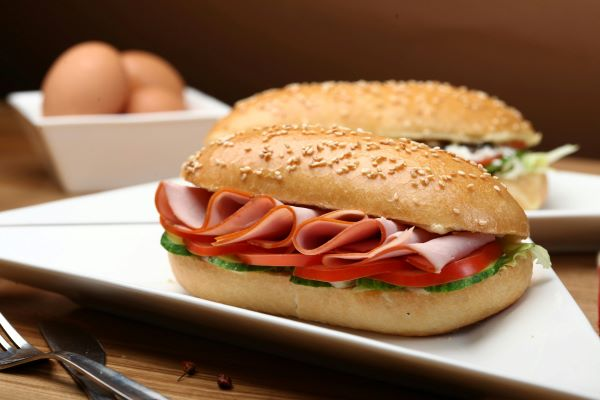

Sandwiches
A sandwich is one of the best go to foods! It's super simple to make.
What you put in it is ultimately up to you. But here are some ideas!
Deli meat which includes salami, ham and turkey.
Cheese: colby jack, american and mozzarella.
Other items are bacon, lettuce, tomato, cucumbers, mayonnaise and pickes
At some stores, the bakery will have affordable yet delicious bread. I highly recommend using these for your sandwiches. It makes it even better!
Cheese quesadilla
For a cheese quesadilla, you'll need flour or corn tortillas, whichever you prefer and of course cheese!
Start by placing the tortilla on the pan on low heat. Then, place cheese on the tortilla and fold it. Let it cook on one side for some time then flip it so the other side can cook. Repeat this until you get your wanted result.
After this you're done! You can have it with salsa or anything else you'd like.

Eggs and bacon
For some breakfast at home you'll need some bacon and eggs from the store. For eggs: garlic salt, salt and pepper go really well with it.
Start with eggs by cracking eggs into a bowl and start stirring! You can add anything that you think would go well with it such as cheese or other spices.
Pour the bowl into a pan on the stove and use a spatula to beat the eggs. Use the utensil to cut up and scrap up the eggs until they look cooked to your liking. Then put them aside on a plate.
For the bacon, just take it out of the package onto a hot pan and let it cook until it looks cooked enough.
Then you can add other foods, I always love a good cream cheese bagel!
Mac & Cheese
The best mac and cheese is basic but so yummy: Kraft
Along with this box, you need milk of your choice and butter.
You'll boil a pot of water then pour in the noodles. After the noodles are done, which is usually 10-15 minutes, you can use aa strainer to pour out the water.
After this just pour in the milk, cheese and butter. The box will have the exact measurements.